更新日 : 2017/05/14
母の日で店頭にアジサイが沢山あり、見てると欲しくなりました。
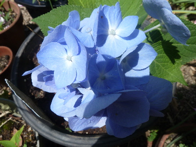
見た感じ普通のアジサイです。でもこのアジサイは霧島の恵っていう名前で四季咲きだそうです。
季節感がないのはどうかと思いますが、薔薇の四季咲きに私は抵抗がないので、アジサイの四季咲きもいいかなと思いました。
ポット苗で税別298円とお手頃価格だったので、購入して大きめの鉢に植え替えました。
小さいですが、今年1年で何回花が咲くでしょうね。
更新日 : 2017/06/10
最初は綺麗な青でしたが、1月経って紫になりました。
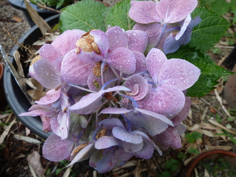
1月くらい花が楽しめましたね。
もう切った方がいいのかな？
更新日 : 2017/06/25
花が傷んできたので切りました。
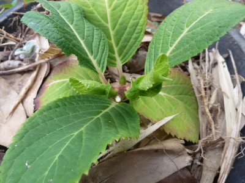
すっきりしました。小さい新芽が出てるので、これがドンドン成長するといいです。
切り取った花は挿し木しました。
花の部分だけで長さが短いので、成功するかは不明です。
更新日 : 2017/07/23
アジサイに小さい葉の集合体が出来ていました。
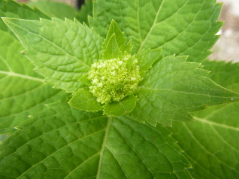
これは花かな？花だったとしたら、あとどれくらいで色がつくいんだろう。
楽しみだな。
更新日 : 2017/08/26
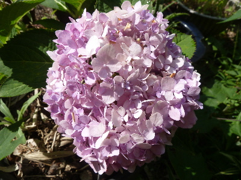
綺麗に咲きましたが、最初に咲いた花と全然違う。
土の成分のせいかな？
ピンクってことは土がアルカリ性なんだろうな。でも色も、大きさも、枚数も違う。 違う種類みたいだ。
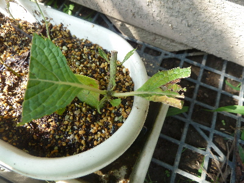
1回目に咲いた花の挿し木です。
枯れていないので、このまま成長するかな。
更新日 : 2017/09/24
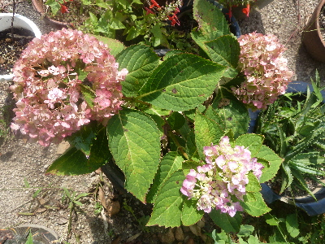
2輪目と3輪目がもう終わりですが、4輪目が咲き出しました。
右下が４輪目です。新しい花は色が明るくて綺麗だな。
四季咲きアジサイって、結構続けて咲いていいですね。
更新日 : 2018/01/28
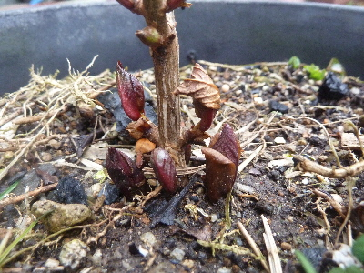
冬で葉っぱがなくなって寂しいアジサイですが、株元に新しい芽が出てました。
アジサイってこの芽が大きくなって広がっていくんですね。
今まで１本だったのが一気に増えますね。大きくなるのが楽しみです。
更新日 : 2018/03/11
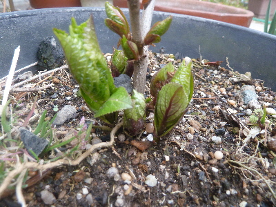
緑になった芽がもうすぐ開きそうです。
まめに肥料をやって、ドンドン大きくしよう。
更新日 : 2018/04/01
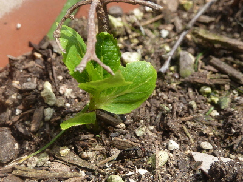
去年アジサイの花の部分を何本か挿し木したんですが、1本だけ新芽が出ました。
花でも挿し木できるのがわかりました。でも3本中1本はちょっと微妙かな。
確率は悪いですがまだアジサイの木が大きくないので、今年も花で挿し木しようと思います。
更新日 : 2018/04/07
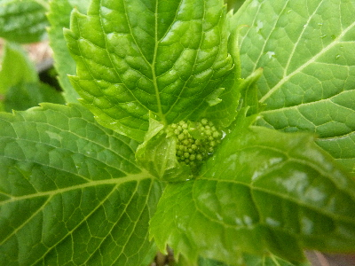
四季咲きは早いですね。花の小さいのが付いてました。
どれくらいで色がつくかな？
更新日 : 2018/05/13
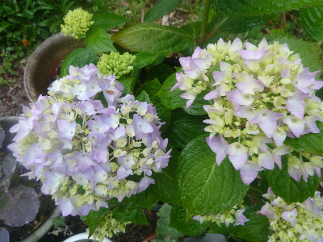
母の日には色が付くかなと思ったんですが、もう少しでした。
これはこれで十分綺麗ですね。
更新日 : 2018/05/19
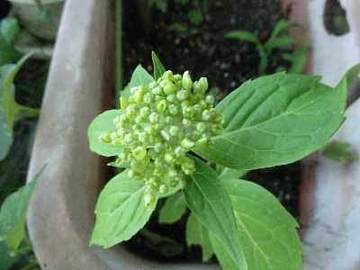
挿し木して1年も経っていませんが、もう花がつきました。
木自体がまだひょろひょろなので倒れないか心配です。この木は今年花が何個つくのかな。
更新日 : 2018/05/26
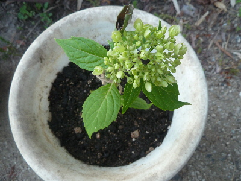
鉢上げしました。
たぶん1年で大きくなると思うので、地に植えた方がよかったかも？
植えてしまったものはしょうがないので、このまま来年までこれで育てようと思います。
アジサイは2月くらいに植え替えるのがいいみたいですね。
更新日 : 2018/06/02
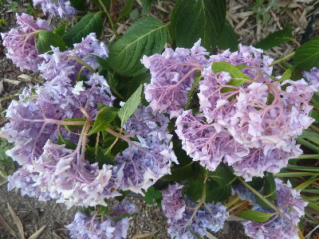
雨が降っていなかったので花が下向きになっていました。
鉢植えなので乾燥するとすぐこうなります。もうちょっとしたら、バッサリ剪定して小さくしようかな。
更新日 : 2018/06/10
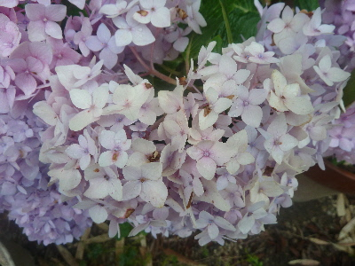
花の色が薄くなったので切り取りました。
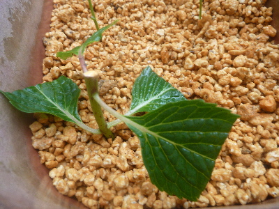
有効利用で挿し木です。
梅雨で定期的に雨が降るといいな。
アジサイって色以外にも形も変わるんですね。
【おいしいものを食べよう。】【たくさん寝よう。】
【ソロ活をしよう!】【季節感のあることをしよう。】【動画視聴はほどほどに。】【当サイトの全てのコンテンツは無断転載禁止です。】